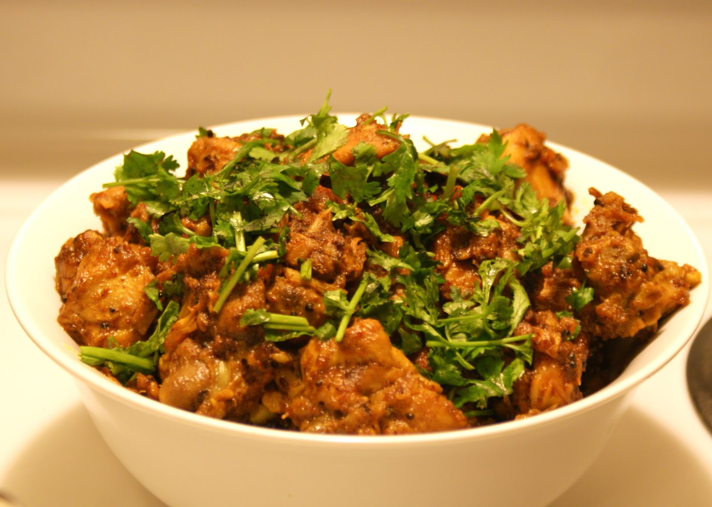

Nepali Chicken Curry

Description :
Let us take a look at how a simple and delicious chicken curry is made in Nepal.
This dish is generally prepared in weekends and enjoyed with the whole family.
Ingredients :
- Chicken - 500 grams.
- Red Onion - 2.
- Ginger-garlic paste - 2 tablepoons.
- Tumeric - 1 teaspoon.
- Green Chilly - 2.
- Medium sized tomato - 4-5
- Mustard oil - 4 tablepoons.
- Chicken Masala - 1 and half tablespoons.
- Salt - To taste.
Steps to follow :
- Firstly roughly dice your onions, chillies and tomatoes and set them aside
- Open your stove on medium-low heat and place a pan.
- Pour 2 tablespoons of mustard oil and let it heat up a little.
- After heating up the oil throw in the chicken.
- Cook the chicken thoroughly until it has a little golden crust on the outside. Around 15-16 minutes.
- Remove the chicken in a bowl and set it aside for now.
- In the same pan add 1 tablespoon of mustard oil.
- Now pour in your roughly choped onions first.
- Add a pinch of salt to help wilt the onions faster.
- Add the chillies to the onions and also add tumeric to give it some color.
- Cook the onions till the oil spererates from it and remember to keep on stirring them to prevent them from burning.
- Now add in the tomatoes and again a small pinch of salt to help it cook faster. Cook them weel otherwise your curry will taste like raw tomatoes
- Cook the tomatoes till it completely wilts and chunks start disappearaing.
- Now toss in the chicken that you set aside to the pan. Since we already cooked the chicken before we will only cook it for 6-7 more minutes.
- Finally add the chicken masala and the chilly powder to the curry and throughly mix them. Cook it for additional 2-3 minutes.
- The chicken curry is now ready. You can eat it with a serving of rice or with flat-breads
Like all the other recipes, I will be providing with a video link that can aid you better to cook the above recipe.
How to cook a beautiful chicken curry the Nepali way.